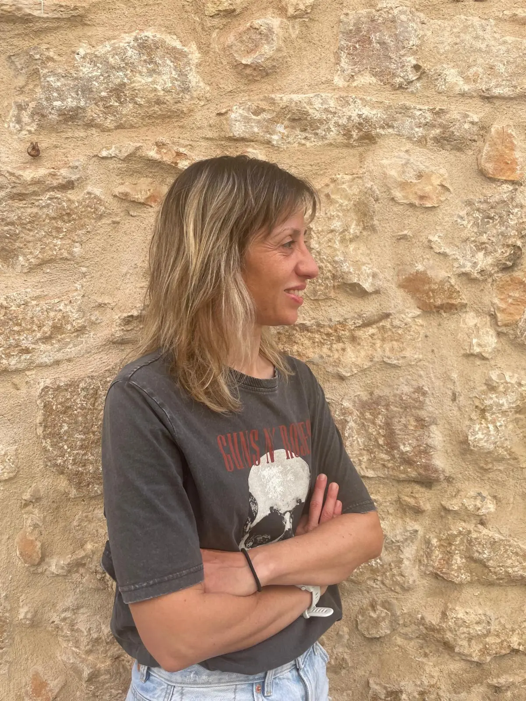

Acompañamiento y proceso terapéutico
Mónica Caballer Boix
Su manera de trabajar pone en el centro a la persona, su momento vital y la necesidad de encontrar un espacio seguro desde donde comprender, sostener y transformar lo que está ocurriendo.
Desde una mirada respetuosa y cercana, acompaña procesos personales atendiendo a la singularidad de cada historia y a la manera única de vivirla.
Su enfoque busca ofrecer un lugar donde sentirse escuchada, acogida y acompañada con sensibilidad.